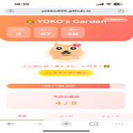

<!DOCTYPE html>
<html lang="ja">
<head>
    <meta charset="UTF-8">
    <meta name="viewport" content="width=device-width, initial-scale=1.0">
    <title>瞑想タイマー - Inner Peace</title>
    <link rel="icon" type="image/x-icon" href="favicon.ico">
    <link rel="icon" type="image/png" sizes="192x192" href="favicon-192.png">
    <link rel="icon" type="image/png" sizes="512x512" href="favicon-512.png">
    <link rel="apple-touch-icon" sizes="192x192" href="favicon-192.png">
    <script crossorigin src="https://unpkg.com/react@18/umd/react.production.min.js"></script>
    <script crossorigin src="https://unpkg.com/react-dom@18/umd/react-dom.production.min.js"></script>
    <script src="https://unpkg.com/@babel/standalone/babel.min.js"></script>
    <style>
        * {
            margin: 0;
            padding: 0;
            box-sizing: border-box;
        }

        body {
            font-family: 'Noto Sans JP', sans-serif;
            background: radial-gradient(circle at top, rgba(123, 104, 238, 0.9), rgba(72, 61, 139, 0.95));
            min-height: 100vh;
            margin: 0;
            padding: 0;
            display: flex;
            flex-direction: column;
            align-items: center;
            justify-content: center;
            overflow-y: auto;
            color: white;
        }

        #root {
            width: 100%;
            min-height: 100vh;
            display: flex;
            align-items: center;
            justify-content: center;
        }

        .app {
            width: 100%;
            min-height: 100vh;
            position: relative;
            display: flex;
            align-items: center;
            justify-content: center;
            padding: 20px 0;
        }

        /* 背景のグラデーション */
        .background {
            position: absolute;
            top: 0;
            left: 0;
            width: 100%;
            height: 100%;
            background: linear-gradient(135deg, 
                #667eea 0%, 
                #764ba2 50%, 
                #f093fb 100%);
            animation: gradientShift 15s ease infinite;
            z-index: -1;
        }

        @keyframes gradientShift {
            0%, 100% {
                background: linear-gradient(135deg, #667eea 0%, #764ba2 50%, #f093fb 100%);
            }
            33% {
                background: linear-gradient(135deg, #a8edea 0%, #fed6e3 100%);
            }
            66% {
                background: linear-gradient(135deg, #89f7fe 0%, #66a6ff 100%);
            }
        }

        /* 自然要素の追加 */
        .nature-overlay {
            position: absolute;
            top: 0;
            left: 0;
            width: 100%;
            height: 100%;
            background-image: 
                radial-gradient(circle at 20% 50%, rgba(255,255,255,0.1) 0%, transparent 50%),
                radial-gradient(circle at 80% 80%, rgba(255,255,255,0.1) 0%, transparent 50%);
            pointer-events: none;
        }

        /* 上部のfavicon */
        .top-favicon {
            position: absolute;
            top: max(20px, 2vh);
            left: 50%;
            transform: translateX(-50%);
            width: min(80px, 10vh);
            height: min(80px, 10vh);
            z-index: 10;
            pointer-events: none;
            animation: floatIcon 4s ease-in-out infinite;
            filter: drop-shadow(0 4px 12px rgba(0, 0, 0, 0.2));
        }

        .top-favicon img {
            width: 100%;
            height: 100%;
            object-fit: contain;
            border-radius: 50%;
            background: rgba(255, 255, 255, 0.1);
            backdrop-filter: blur(10px);
            padding: 8px;
            box-shadow: 0 8px 24px rgba(0, 0, 0, 0.15);
        }

        @keyframes floatIcon {
            0%, 100% {
                transform: translateX(-50%) translateY(0px);
                opacity: 0.9;
            }
            50% {
                transform: translateX(-50%) translateY(-8px);
                opacity: 1;
            }
        }

        /* モバイル対応 */
        @media (max-width: 768px) {
            .top-favicon {
                top: 20px;
                width: 60px;
                height: 60px;
            }
        }

        .container {
            background: rgba(255, 255, 255, 0.15);
            backdrop-filter: blur(20px);
            border-radius: 30px;
            padding: clamp(20px, 3vh, 40px) clamp(20px, 5vw, 40px) clamp(30px, 4vh, 50px);
            margin: clamp(50px, 8vh, 80px) auto clamp(20px, 3vh, 40px);
            max-width: 600px;
            width: 90%;
            position: relative;
            box-shadow: 0 20px 60px rgba(0, 0, 0, 0.3);
            text-align: center;
            color: white;
        }

        h1 {
            font-size: clamp(1.8rem, 4vh, 2.5rem);
            margin-bottom: clamp(5px, 1vh, 10px);
            font-weight: 300;
            letter-spacing: 2px;
        }

        .subtitle {
            font-size: clamp(0.85rem, 2vh, 1rem);
            margin-bottom: clamp(20px, 3vh, 40px);
            opacity: 0.9;
            font-weight: 300;
        }

        /* 時間選択ボタン */
        .time-selection {
            display: flex;
            gap: clamp(10px, 2vw, 20px);
            justify-content: center;
            margin-bottom: clamp(20px, 3vh, 40px);
            flex-wrap: wrap;
        }

        .time-btn {
            background: rgba(255, 255, 255, 0.25);
            border: 2px solid rgba(255, 255, 255, 0.4);
            color: rgba(50, 50, 50, 0.9);
            padding: clamp(10px, 2vh, 15px) clamp(20px, 4vw, 30px);
            border-radius: 15px;
            font-size: clamp(1rem, 2vh, 1.2rem);
            cursor: pointer;
            transition: all 0.3s ease;
            font-weight: 500;
            text-shadow: 0 1px 2px rgba(255, 255, 255, 0.8);
        }

        .time-btn:hover {
            background: rgba(255, 255, 255, 0.4);
            transform: translateY(-2px);
        }

        .time-btn.active {
            background: rgba(255, 255, 255, 0.6);
            border-color: white;
        }

        /* タイマー表示 */
        .timer-display {
            font-size: clamp(3rem, 8vh, 5rem);
            font-weight: 200;
            margin: clamp(20px, 3vh, 40px) 0;
            letter-spacing: clamp(2px, 0.5vw, 5px);
            position: relative;
            z-index: 1;
        }

        /* プログレスバー */
        .progress-container {
            width: 100%;
            height: 8px;
            background: rgba(255, 255, 255, 0.2);
            border-radius: 10px;
            margin: clamp(15px, 2vh, 30px) 0;
            overflow: hidden;
            position: relative;
            z-index: 1;
        }

        .progress-bar {
            height: 100%;
            background: white;
            transition: width 1s linear;
            border-radius: 10px;
        }

        /* 開始・停止ボタン */
        .control-btn {
            background: white;
            color: #667eea;
            border: none;
            padding: clamp(15px, 2.5vh, 20px) clamp(35px, 6vw, 50px);
            border-radius: 50px;
            font-size: clamp(1.1rem, 2.2vh, 1.3rem);
            cursor: pointer;
            transition: all 0.3s ease;
            font-weight: 500;
            margin: clamp(10px, 2vh, 20px) 10px;
            position: relative;
            z-index: 1;
        }

        .control-btn:hover {
            transform: scale(1.05);
            box-shadow: 0 10px 30px rgba(0, 0, 0, 0.2);
        }

        .control-btn.stop {
            background: rgba(255, 255, 255, 0.3);
            color: white;
        }

        /* 記録表示 */
        .stats {
            margin-top: clamp(20px, 3vh, 40px);
            padding-top: clamp(15px, 2vh, 30px);
            border-top: 1px solid rgba(255, 255, 255, 0.3);
        }

        .bgm-selection {
            margin: clamp(15px, 2vh, 30px) 0 clamp(5px, 1vh, 10px);
            text-align: left;
        }

        .bgm-selection label {
            display: block;
            font-size: 0.9rem;
            margin-bottom: 8px;
            opacity: 0.85;
        }

        .bgm-select {
            width: 100%;
            padding: 12px 14px;
            border-radius: 15px;
            border: 2px solid rgba(255, 255, 255, 0.4);
            background: rgba(255, 255, 255, 0.2);
            color: #1f1f1f;
            font-size: 1rem;
            outline: none;
            transition: border 0.2s ease;
        }

        .bgm-select:focus {
            border-color: white;
        }

        .stats-item {
            display: inline-block;
            margin: 0 clamp(10px, 2vw, 20px);
            font-size: clamp(0.9rem, 1.8vh, 1rem);
        }

        .stats-number {
            font-size: clamp(1.8rem, 4vh, 2.5rem);
            font-weight: 300;
            display: block;
            margin-bottom: 5px;
        }

        .stats-label {
            opacity: 0.8;
            font-size: 0.9rem;
        }

        /* 呼吸ビジュアル */
        .breathing-circle {
            position: absolute;
            top: 50%;
            left: 50%;
            transform: translate(-50%, -50%);
            width: clamp(250px, 35vh, 350px);
            height: clamp(250px, 35vh, 350px);
            border-radius: 50%;
            background: rgba(255, 255, 255, 0.15);
            display: flex;
            align-items: center;
            justify-content: center;
            animation: breathe 8s ease-in-out infinite;
            z-index: 0;
            pointer-events: none;
        }

        @keyframes breathe {
            0%, 100% {
                transform: translate(-50%, -50%) scale(0.9);
                opacity: 0.3;
            }
            50% {
                transform: translate(-50%, -50%) scale(1.1);
                opacity: 0.5;
            }
        }

        .breathing-text {
            font-size: clamp(1rem, 2vh, 1.2rem);
            font-weight: 300;
            opacity: 0.6;
        }

        /* メッセージ表示 */
        .message {
            font-size: clamp(1rem, 2vh, 1.2rem);
            margin: clamp(10px, 2vh, 20px) 0;
            min-height: clamp(40px, 6vh, 60px);
            font-weight: 300;
            opacity: 0.9;
            line-height: 1.6;
            position: relative;
            z-index: 1;
        }

        /* 振り返りモーダル */
        .reflection-modal {
            position: fixed;
            top: 0;
            left: 0;
            width: 100%;
            height: 100%;
            background: rgba(0, 0, 0, 0.7);
            display: flex;
            align-items: center;
            justify-content: center;
            z-index: 1000;
            animation: fadeIn 0.3s ease;
        }

        @keyframes fadeIn {
            from {
                opacity: 0;
            }
            to {
                opacity: 1;
            }
        }

        .reflection-content {
            background: rgba(255, 255, 255, 0.95);
            backdrop-filter: blur(20px);
            border-radius: 30px;
            padding: 40px;
            max-width: 500px;
            width: 90%;
            max-height: 80vh;
            overflow-y: auto;
            color: #333;
            box-shadow: 0 20px 60px rgba(0, 0, 0, 0.4);
            animation: slideUp 0.3s ease;
        }

        @keyframes slideUp {
            from {
                transform: translateY(30px);
                opacity: 0;
            }
            to {
                transform: translateY(0);
                opacity: 1;
            }
        }

        .reflection-title {
            font-size: 1.8rem;
            margin-bottom: 10px;
            color: #667eea;
            font-weight: 300;
            text-align: center;
        }

        .reflection-subtitle {
            font-size: 0.9rem;
            margin-bottom: 30px;
            color: #666;
            text-align: center;
            opacity: 0.8;
        }

        .reflection-form {
            display: flex;
            flex-direction: column;
            gap: 20px;
        }

        .form-group {
            display: flex;
            flex-direction: column;
            gap: 8px;
        }

        .form-label {
            font-size: 1rem;
            color: #333;
            font-weight: 500;
        }

        .mood-buttons {
            display: flex;
            gap: 10px;
            flex-wrap: wrap;
        }

        .mood-btn {
            flex: 1;
            min-width: 80px;
            padding: 12px 20px;
            border: 2px solid #ddd;
            background: white;
            border-radius: 20px;
            cursor: pointer;
            transition: all 0.3s ease;
            font-size: 0.9rem;
            color: #666;
        }

        .mood-btn:hover {
            border-color: #667eea;
            transform: translateY(-2px);
        }

        .mood-btn.active {
            background: #667eea;
            color: white;
            border-color: #667eea;
        }

        .reflection-textarea {
            width: 100%;
            min-height: 120px;
            padding: 15px;
            border: 2px solid #ddd;
            border-radius: 15px;
            font-size: 1rem;
            font-family: inherit;
            resize: vertical;
            transition: border-color 0.3s ease;
        }

        .reflection-textarea:focus {
            outline: none;
            border-color: #667eea;
        }

        .reflection-actions {
            display: flex;
            gap: 10px;
            margin-top: 10px;
        }

        .reflection-btn {
            flex: 1;
            padding: 15px;
            border: none;
            border-radius: 25px;
            font-size: 1rem;
            cursor: pointer;
            transition: all 0.3s ease;
            font-weight: 500;
        }

        .reflection-btn.save {
            background: #667eea;
            color: white;
        }

        .reflection-btn.save:hover {
            background: #5568d3;
            transform: translateY(-2px);
        }

        .reflection-btn.skip {
            background: #f0f0f0;
            color: #666;
        }

        .reflection-btn.skip:hover {
            background: #e0e0e0;
        }

        /* ナビゲーションモーダル */
        .navigation-modal {
            position: fixed;
            top: 0;
            left: 0;
            width: 100%;
            height: 100%;
            background: rgba(0, 0, 0, 0.7);
            display: flex;
            align-items: center;
            justify-content: center;
            z-index: 1000;
            animation: fadeIn 0.3s ease;
        }

        .navigation-content {
            background: rgba(255, 255, 255, 0.95);
            backdrop-filter: blur(20px);
            border-radius: 30px;
            padding: 50px 40px;
            max-width: 500px;
            width: 90%;
            text-align: center;
            color: #333;
            box-shadow: 0 20px 60px rgba(0, 0, 0, 0.4);
            animation: slideUp 0.3s ease;
        }

        .navigation-title {
            font-size: 2rem;
            margin-bottom: 10px;
            color: #667eea;
            font-weight: 300;
        }

        .navigation-subtitle {
            font-size: 1rem;
            margin-bottom: 40px;
            color: #666;
            opacity: 0.8;
        }

        .navigation-actions {
            display: flex;
            flex-direction: column;
            gap: 15px;
        }

        .navigation-btn {
            padding: 18px 30px;
            border: none;
            border-radius: 25px;
            font-size: 1.1rem;
            cursor: pointer;
            transition: all 0.3s ease;
            font-weight: 500;
            color: white;
        }

        .navigation-btn.primary {
            background: #667eea;
        }

        .navigation-btn.primary:hover {
            background: #5568d3;
            transform: translateY(-2px);
        }

        .navigation-btn.secondary {
            background: #f0f0f0;
            color: #666;
        }

        .navigation-btn.secondary:hover {
            background: #e0e0e0;
        }

        /* 過去の振り返り表示 */
        .reflections-list {
            margin-top: 30px;
            padding-top: 30px;
            border-top: 1px solid rgba(0, 0, 0, 0.1);
        }

        .reflections-title {
            font-size: 1.2rem;
            margin-bottom: 20px;
            color: #667eea;
            font-weight: 300;
        }

        .reflection-item {
            background: rgba(102, 126, 234, 0.1);
            padding: 15px;
            border-radius: 15px;
            margin-bottom: 15px;
        }

        .reflection-item-header {
            display: flex;
            justify-content: space-between;
            align-items: center;
            margin-bottom: 10px;
        }

        .reflection-item-date {
            font-size: 0.85rem;
            color: #666;
        }

        .reflection-item-duration {
            font-size: 0.85rem;
            color: #667eea;
            font-weight: 500;
        }

        .reflection-item-mood {
            display: inline-block;
            padding: 4px 12px;
            background: #667eea;
            color: white;
            border-radius: 12px;
            font-size: 0.8rem;
            margin-bottom: 8px;
        }

        .reflection-item-text {
            font-size: 0.95rem;
            color: #333;
            line-height: 1.6;
            white-space: pre-wrap;
        }

        /* スマホ対応 */
        @media (max-width: 768px) {
            .container {
                padding: 35px 20px 40px;
                margin-top: 100px;
                margin-bottom: 30px;
                width: 95%;
            }

            h1 {
                font-size: 1.8rem;
            }

            .subtitle {
                font-size: 0.9rem;
                margin-bottom: 30px;
            }

            .time-selection {
                display: grid;
                grid-template-columns: repeat(2, 1fr);
                gap: 15px;
                margin-bottom: 30px;
            }

            .time-btn {
                padding: 12px 20px;
                font-size: 1rem;
                width: 100%;
            }

            .timer-display {
                font-size: 3.5rem;
                margin: 30px 0;
                letter-spacing: 3px;
            }

            .message {
                font-size: 1rem;
                padding: 15px;
                margin: 20px 0;
            }

            .bgm-selection {
                margin: 25px 0 5px;
            }

            .control-btn {
                padding: 12px 25px;
                font-size: 0.95rem;
                margin: 5px;
            }

            .reflection-modal {
                padding: 30px 20px;
            }

            .reflection-content {
                padding: 30px 20px;
            }

            .navigation-content {
                padding: 40px 25px;
            }
        }

        @media (max-width: 480px) {
            .container {
                padding: 30px 15px 35px;
                margin-top: 90px;
                margin-bottom: 40px;
            }

            h1 {
                font-size: 1.5rem;
            }

            .timer-display {
                font-size: 2.8rem;
            }

            .time-btn {
                padding: 10px 15px;
                font-size: 0.9rem;
            }

            .bgm-selection {
                margin: 20px 0 5px;
            }
        }
    </style>
</head>
<body>
    <div id="root"></div>

    <script type="text/babel">
        const { useState, useEffect, useRef } = React;

        // ナビゲーション内容
        const MEDITATION_SCRIPTS = {
            5: [
                { time: 0, text: '5分間の瞑想を始めます。楽な姿勢で座り、目を閉じてください' },
                { time: 30, text: 'ゆっくりと深呼吸を3回繰り返しましょう' },
                { time: 120, text: '呼吸に意識を向けて、心を静めていきます' },
                { time: 240, text: 'もうすぐ終わります。ゆっくりと意識を戻していきましょう' },
                { time: 300, text: 'お疲れ様でした。ゆっくり目を開けてください' }
            ],
            10: [
                { time: 0, text: '10分間の瞑想を始めます。背筋を伸ばし、目を閉じてください' },
                { time: 60, text: '深く息を吸って、ゆっくり吐き出します' },
                { time: 120, text: '体の力を抜いて、リラックスしていきましょう' },
                { time: 300, text: '呼吸のリズムを感じながら、今この瞬間に意識を向けます' },
                { time: 480, text: '心が穏やかになっていくのを感じてください' },
                { time: 570, text: 'ゆっくりと意識を戻していきましょう' },
                { time: 600, text: 'お疲れ様でした。目を開けて、深呼吸をしてください' }
            ],
            15: [
                { time: 0, text: '15分間の瞑想を始めます。楽な姿勢で座り、目を閉じてください' },
                { time: 60, text: '深く息を吸って、ゆっくりと吐き出します。呼吸に意識を向けましょう' },
                { time: 180, text: '体の力を抜いて、リラックスしていきます。肩の力を抜きましょう' },
                { time: 360, text: '呼吸のリズムを感じながら、今この瞬間に意識を向けます' },
                { time: 540, text: '心の中にある雑念を、雲のように流れていくのを観察しましょう' },
                { time: 720, text: '体全体が深くリラックスし、心が穏やかになっていくのを感じてください' },
                { time: 870, text: 'ゆっくりと意識を戻していきましょう' },
                { time: 900, text: 'お疲れ様でした。目を開けて、この穏やかな気持ちを大切にしてください' }
            ],
            30: [
                { time: 0, text: '30分間の瞑想を始めます。楽な姿勢で座り、目を閉じてください' },
                { time: 120, text: '深呼吸を繰り返しながら、体全体の力を抜いていきます' },
                { time: 300, text: '頭のてっぺんから意識を向けていきます。額、目、頬の力を抜きましょう' },
                { time: 600, text: '首、肩、腕へと意識を移します。緊張を手放していきます' },
                { time: 900, text: '胸、お腹、腰へと意識を向けます。呼吸とともにリラックスしていきます' },
                { time: 1080, text: '心の中にある不安や緊張を、呼吸とともに外へ流していきましょう' },
                { time: 1200, text: '太もも、膝、ふくらはぎ、足先まで意識を向けます' },
                { time: 1380, text: '今この瞬間、あなたは安全で、穏やかです。心を解放していきましょう' },
                { time: 1500, text: '体全体が深くリラックスし、心が満たされていくのを感じてください' },
                { time: 1620, text: 'この静けさの中にある、小さな幸福感を味わいましょう' },
                { time: 1710, text: 'ゆっくりと意識を戻していきます' },
                { time: 1800, text: 'お疲れ様でした。目を開けて、この穏やかな気持ちを大切にしてください' }
            ]
        };

        const BGM_TRACKS = [
            { id: 'bgm1', label: 'メンタルリセット', path: 'BGM/bgm1-mental-reset.mp3' },
            { id: 'bgm2', label: 'ホワイト・ピンクノイズ', path: 'BGM/bgm2-white-pink-noise.mp3' },
            { id: 'bgm3', label: 'ユニバース・フローティング', path: 'BGM/bgm3-universe-floating.mp3' },
            { id: 'bgm4', label: 'スピリチュアル・ヘビー', path: 'BGM/bgm4-spiritual-heavy.mp3' },
            { id: 'bgm5', label: 'ディープ・サイレンス', path: 'BGM/bgm5-deep-silence.mp3' }
        ];

        function MeditationApp() {
            const [selectedTime, setSelectedTime] = useState(null);
            const [isActive, setIsActive] = useState(false);
            const [timeLeft, setTimeLeft] = useState(0);
            const [currentMessage, setCurrentMessage] = useState('時間を選んで瞑想を始めましょう');
            const [streak, setStreak] = useState(0);
            const [showReflection, setShowReflection] = useState(false);
            const [showNavigation, setShowNavigation] = useState(false);
            const [mood, setMood] = useState('');
            const [reflection, setReflection] = useState('');
            const [reflections, setReflections] = useState([]);
            const [selectedBGMId, setSelectedBGMId] = useState('bgm5');
            
            const audioRef = useRef(null);
            const timerRef = useRef(null);
            const scriptIndexRef = useRef(0);
            const fadeOutIntervalRef = useRef(null);
            const lastSpeechPromiseRef = useRef(null);

            const selectedBGM = BGM_TRACKS.find(track => track.id === selectedBGMId) || BGM_TRACKS[0];

            // 午前1時を基準に日付を取得する関数
            const getDateString = () => {
                const now = new Date();
                const jstNow = new Date(now.toLocaleString('ja-JP', { timeZone: 'Asia/Tokyo' }));
                const resetHour = 1; // 午前1時
                
                // 午前1時より前は前日として扱う
                if (jstNow.getHours() < resetHour) {
                    const yesterday = new Date(jstNow);
                    yesterday.setDate(yesterday.getDate() - 1);
                    return yesterday.toDateString();
                }
                return jstNow.toDateString();
            };

            // 記録の読み込み
            useEffect(() => {
                const savedStreak = localStorage.getItem('meditationStreak');
                const lastMeditationTimestamp = localStorage.getItem('lastMeditationTimestamp');
                
                if (!lastMeditationTimestamp) {
                    // 初回訪問
                    setStreak(0);
                    return;
                }
                
                const now = new Date();
                const jstNow = new Date(now.toLocaleString('ja-JP', { timeZone: 'Asia/Tokyo' }));
                const lastMeditation = new Date(lastMeditationTimestamp);
                const lastMeditationJST = new Date(lastMeditation.toLocaleString('ja-JP', { timeZone: 'Asia/Tokyo' }));
                
                // 午前1時基準で日付を計算
                const getDateKey = (date) => {
                    const dateKey = new Date(date);
                    if (dateKey.getHours() < 1) {
                        dateKey.setDate(dateKey.getDate() - 1);
                    }
                    return dateKey.toDateString();
                };
                
                const todayKey = getDateKey(jstNow);
                const lastMeditationDateKey = getDateKey(lastMeditationJST);
                
                // 経過時間を計算（ミリ秒）
                const timeDiff = jstNow.getTime() - lastMeditationJST.getTime();
                const hoursDiff = timeDiff / (1000 * 60 * 60);
                
                if (lastMeditationDateKey === todayKey) {
                    // 今日（午前1時基準）に瞑想済み
                    setStreak(parseInt(savedStreak || '0'));
                } else if (hoursDiff > 48) {
                    // 48時間以上経過していたら連続日数をリセット
                    setStreak(0);
                    localStorage.setItem('meditationStreak', '0');
                } else {
                    // 48時間以内（連続日数を保持）
                    setStreak(parseInt(savedStreak || '0'));
                }
            }, []);

            // BGM選択の読み込み
            useEffect(() => {
                const savedBGM = localStorage.getItem('selectedBGM');
                if (savedBGM && BGM_TRACKS.some(track => track.id === savedBGM)) {
                    setSelectedBGMId(savedBGM);
                }
            }, []);

            // 時間選択
            const selectTime = (minutes) => {
                if (isActive) return;
                setSelectedTime(minutes);
                setTimeLeft(minutes * 60);
                scriptIndexRef.current = 0;
            };

            const handleBGMPlaybackError = (error) => {
                if (error?.name === 'AbortError') {
                    console.info('BGM再生が別の操作によって中断されました');
                    return;
                }
                console.error('BGM再生エラー:', error);
            };

            useEffect(() => {
                if (!selectedBGM) return;
                localStorage.setItem('selectedBGM', selectedBGM.id);

                if (!audioRef.current) return;
                const audio = audioRef.current;
                const wasPlaying = !audio.paused && !audio.ended && audio.currentTime > 0;

                audio.pause();
                audio.src = selectedBGM.path;
                audio.load();
                audio.dataset.trackId = selectedBGM.id;
                audio.currentTime = 0;

                if (wasPlaying) {
                    const playPromise = audio.play();
                    if (playPromise !== undefined) {
                        playPromise.catch(handleBGMPlaybackError);
                    }
                }
            }, [selectedBGM]);

            // 音声読み上げ（Promiseを返して再生完了を待てるように）
            const speak = (text) => {
                return new Promise((resolve, reject) => {
                    if ('speechSynthesis' in window) {
                        const utterance = new SpeechSynthesisUtterance(text);
                        utterance.lang = 'ja-JP';
                        utterance.rate = 0.7;
                        utterance.pitch = 1.0;
                        
                        // 音声再生完了時にresolve
                        utterance.onend = () => {
                            resolve();
                        };
                        
                        // エラー時にreject
                        utterance.onerror = (error) => {
                            reject(error);
                        };
                        
                        speechSynthesis.speak(utterance);
                    } else {
                        // speechSynthesisが利用できない場合は即座にresolve
                        resolve();
                    }
                });
            };

            // 瞑想開始
            const startMeditation = () => {
                if (!selectedTime) return;
                
                setIsActive(true);
                setTimeLeft(selectedTime * 60);
                scriptIndexRef.current = 0;
                lastSpeechPromiseRef.current = null; // 最後の音声Promiseをクリア

                // BGM再生（エラーハンドリング付き）
                if (audioRef.current && selectedBGM) {
                    const audio = audioRef.current;
                    if (audio.dataset.trackId !== selectedBGM.id) {
                        audio.pause();
                        audio.src = selectedBGM.path;
                        audio.load();
                        audio.dataset.trackId = selectedBGM.id;
                    }

                    audio.currentTime = 0;
                    audio.volume = 0.3; // 音量を30%に設定（ナビより小さく）
                    
                    const playPromise = audio.play();
                    
                    if (playPromise !== undefined) {
                        playPromise.then(() => {
                            console.log('BGM再生開始');
                        }).catch(handleBGMPlaybackError);
                    }
                }

                // 最初のナビゲーション（少し遅延させてBGMを先に再生）
                setTimeout(() => {
                    const script = MEDITATION_SCRIPTS[selectedTime][0];
                    setCurrentMessage(script.text);
                    speak(script.text);
                }, 800);
            };

            // 瞑想停止
            const stopMeditation = (skipCancelSpeech = false) => {
                setIsActive(false);
                clearInterval(timerRef.current);
                
                // フェードアウト処理をクリーンアップ
                if (fadeOutIntervalRef.current) {
                    clearInterval(fadeOutIntervalRef.current);
                    fadeOutIntervalRef.current = null;
                }
                
                if (audioRef.current) {
                    // フェードアウトが完了するまで少し待ってから停止（音声が切れないように）
                    setTimeout(() => {
                        if (audioRef.current) {
                            audioRef.current.pause();
                            audioRef.current.currentTime = 0;
                            // 音量を元に戻す
                            audioRef.current.volume = 0.3;
                        }
                    }, 500); // フェードアウト完了を待つ
                }

                // 最後の音声が再生中の場合はキャンセルしない
                if (!skipCancelSpeech) {
                    speechSynthesis.cancel();
                }
                lastSpeechPromiseRef.current = null; // 最後の音声Promiseをクリア
                setCurrentMessage('時間を選んで瞑想を始めましょう');
            };

            // 瞑想完了
            const completeMeditation = () => {
                // 音声をフェードアウト（最後の音声が切れないように）
                if (audioRef.current) {
                    const audio = audioRef.current;
                    const fadeOutDuration = 3000; // 3秒かけてフェードアウト（より滑らかに）
                    const fadeOutSteps = 30; // 30ステップでフェードアウト
                    const initialVolume = audio.volume;
                    const volumeStep = initialVolume / fadeOutSteps;
                    const timeStep = fadeOutDuration / fadeOutSteps;
                    
                    let currentStep = 0;
                    // 既存のフェードアウトをクリーンアップ
                    if (fadeOutIntervalRef.current) {
                        clearInterval(fadeOutIntervalRef.current);
                    }
                    
                    fadeOutIntervalRef.current = setInterval(() => {
                        currentStep++;
                        if (currentStep >= fadeOutSteps) {
                            audio.volume = 0;
                            clearInterval(fadeOutIntervalRef.current);
                            fadeOutIntervalRef.current = null;
                        } else {
                            audio.volume = Math.max(0, initialVolume - (volumeStep * currentStep));
                        }
                    }, timeStep);
                }
                
                // 記録を保存（午前1時基準、24時間以内に瞑想した場合のみ連続日数を更新）
                const now = new Date();
                const jstNow = new Date(now.toLocaleString('ja-JP', { timeZone: 'Asia/Tokyo' }));
                const lastMeditationTimestamp = localStorage.getItem('lastMeditationTimestamp');
                
                // 午前1時基準で日付を計算
                const getDateKey = (date) => {
                    const dateKey = new Date(date);
                    if (dateKey.getHours() < 1) {
                        dateKey.setDate(dateKey.getDate() - 1);
                    }
                    return dateKey.toDateString();
                };
                
                const todayKey = getDateKey(jstNow);
                let newStreak = streak;
                
                if (lastMeditationTimestamp) {
                    const lastMeditation = new Date(lastMeditationTimestamp);
                    const lastMeditationJST = new Date(lastMeditation.toLocaleString('ja-JP', { timeZone: 'Asia/Tokyo' }));
                    const lastMeditationDateKey = getDateKey(lastMeditationJST);
                    
                    // 経過時間を計算（時間）
                    const timeDiff = jstNow.getTime() - lastMeditationJST.getTime();
                    const hoursDiff = timeDiff / (1000 * 60 * 60);
                    
                    if (lastMeditationDateKey === todayKey) {
                        // 今日（午前1時基準）に既に瞑想済みの場合は連続日数を増やさない
                        // 連続日数はそのまま
                    } else if (hoursDiff <= 48) {
                        // 48時間以内で、かつ新しい日（午前1時基準）なら連続日数を増やす
                        newStreak = streak + 1;
                        setStreak(newStreak);
                        localStorage.setItem('meditationStreak', newStreak.toString());
                    } else {
                        // 48時間以上経過していたら1にリセット（新しい連続の開始）
                        newStreak = 1;
                        setStreak(newStreak);
                        localStorage.setItem('meditationStreak', '1');
                    }
                } else {
                    // 初回の瞑想
                    newStreak = 1;
                    setStreak(newStreak);
                    localStorage.setItem('meditationStreak', '1');
                }
                
                // 瞑想完了時刻を保存
                localStorage.setItem('lastMeditationTimestamp', now.toISOString());
                
                // 最後のメッセージの再生完了を待ってから振り返りモーダルを表示
                const lastSpeechPromise = lastSpeechPromiseRef.current;
                if (lastSpeechPromise) {
                    lastSpeechPromise.then(() => {
                        // 音声再生完了後に少し待ってから停止（音声が完全に終わるのを確実にする）
                        setTimeout(() => {
                            stopMeditation(true); // 最後の音声をキャンセルしない
                            // 振り返りモーダルを表示
                            setShowReflection(true);
                        }, 300); // 音声再生完了後、少し余裕を持たせる
                    }).catch((error) => {
                        // エラーが発生した場合でも処理を続行
                        console.error('音声再生エラー:', error);
                        stopMeditation(true);
                        setShowReflection(true);
                    });
                } else {
                    // 最後のメッセージが再生されていない場合（念のため）
                    setTimeout(() => {
                        stopMeditation(true);
                        setShowReflection(true);
                    }, 1000);
                }
            };

            // 振り返りを保存
            const saveReflection = () => {
                if (!mood && !reflection) {
                    setShowReflection(false);
                    // ナビゲーションを表示
                    setShowNavigation(true);
                    return;
                }

                const reflectionData = {
                    id: Date.now(),
                    date: new Date().toISOString(),
                    duration: selectedTime,
                    mood: mood,
                    reflection: reflection
                };

                // localStorageに保存
                const savedReflections = JSON.parse(localStorage.getItem('meditationReflections') || '[]');
                savedReflections.unshift(reflectionData);
                // 最新50件のみ保持
                const limitedReflections = savedReflections.slice(0, 50);
                localStorage.setItem('meditationReflections', JSON.stringify(limitedReflections));
                setReflections(limitedReflections);

                // フォームをリセット
                setMood('');
                setReflection('');
                setShowReflection(false);
                // ナビゲーションを表示
                setShowNavigation(true);
            };

            // 振り返りをスキップ
            const skipReflection = () => {
                setMood('');
                setReflection('');
                setShowReflection(false);
                // ナビゲーションを表示
                setShowNavigation(true);
            };

            // 振り返りを削除
            const deleteReflection = (id) => {
                if (confirm('この振り返りを削除しますか？')) {
                    const savedReflections = JSON.parse(localStorage.getItem('meditationReflections') || '[]');
                    const filteredReflections = savedReflections.filter(item => item.id !== id);
                    localStorage.setItem('meditationReflections', JSON.stringify(filteredReflections));
                    setReflections(filteredReflections);
                }
            };

            // もう一度始める
            const startAgain = () => {
                setShowNavigation(false);
                setSelectedTime(null);
                setTimeLeft(0);
                scriptIndexRef.current = 0;
            };

            // ホームに戻る
            const goHome = () => {
                setShowNavigation(false);
                setSelectedTime(null);
                setTimeLeft(0);
                scriptIndexRef.current = 0;
                setCurrentMessage('時間を選んで瞑想を始めましょう');
            };

            // 過去の振り返りを読み込み
            useEffect(() => {
                const savedReflections = JSON.parse(localStorage.getItem('meditationReflections') || '[]');
                setReflections(savedReflections);
            }, []);

            // タイマー処理
            useEffect(() => {
                if (isActive && timeLeft > 0) {
                    timerRef.current = setInterval(() => {
                        setTimeLeft(prev => {
                            const newTime = prev - 1;
                            
                            // ナビゲーションチェック
                            const script = MEDITATION_SCRIPTS[selectedTime];
                            const elapsedSeconds = selectedTime * 60 - newTime;
                            
                            for (let i = scriptIndexRef.current; i < script.length; i++) {
                                if (script[i].time === elapsedSeconds) {
                                    setCurrentMessage(script[i].text);
                                    const speechPromise = speak(script[i].text);
                                    // 最後のメッセージ（スクリプトの最後）の場合はPromiseを保存
                                    if (i === script.length - 1) {
                                        lastSpeechPromiseRef.current = speechPromise;
                                    }
                                    scriptIndexRef.current = i + 1;
                                    break;
                                }
                            }

                            if (newTime <= 0) {
                                completeMeditation();
                            }

                            return newTime;
                        });
                    }, 1000);

                    return () => clearInterval(timerRef.current);
                }
            }, [isActive, timeLeft, selectedTime]);

            // 時間フォーマット
            const formatTime = (seconds) => {
                const mins = Math.floor(seconds / 60);
                const secs = seconds % 60;
                return `${mins.toString().padStart(2, '0')}:${secs.toString().padStart(2, '0')}`;
            };

            // プログレス計算
            const progress = selectedTime ? ((selectedTime * 60 - timeLeft) / (selectedTime * 60)) * 100 : 0;

            return (
                <div className="app">
                    <div className="background"></div>
                    <div className="nature-overlay"></div>
                    <div className="top-favicon">
                        
                    </div>
                    
                    <div className="container">
                        <h1>瞑想タイマー</h1>
                        <p className="subtitle">Inner Peace</p>

                        {!isActive && (
                            <>
                                <div className="time-selection">
                                    <button 
                                        className={`time-btn ${selectedTime === 5 ? 'active' : ''}`}
                                        onClick={() => selectTime(5)}
                                    >
                                        5分
                                    </button>
                                    <button 
                                        className={`time-btn ${selectedTime === 10 ? 'active' : ''}`}
                                        onClick={() => selectTime(10)}
                                    >
                                        10分
                                    </button>
                                    <button 
                                        className={`time-btn ${selectedTime === 15 ? 'active' : ''}`}
                                        onClick={() => selectTime(15)}
                                    >
                                        15分
                                    </button>
                                    <button 
                                        className={`time-btn ${selectedTime === 30 ? 'active' : ''}`}
                                        onClick={() => selectTime(30)}
                                    >
                                        30分
                                    </button>
                                </div>

                                <div className="bgm-selection">
                                    <label htmlFor="bgm-select">BGM</label>
                                    <select
                                        id="bgm-select"
                                        className="bgm-select"
                                        value={selectedBGMId}
                                        onChange={(event) => setSelectedBGMId(event.target.value)}
                                    >
                                        {BGM_TRACKS.map(track => (
                                            <option key={track.id} value={track.id}>
                                                {track.label}
                                            </option>
                                        ))}
                                    </select>
                                </div>

                                {selectedTime && (
                                    <button className="control-btn" onClick={startMeditation}>
                                        開始
                                    </button>
                                )}
                            </>
                        )}

                        {isActive && (
                            <>
                                <div className="breathing-circle"></div>
                                
                                <div className="timer-display">
                                    {formatTime(timeLeft)}
                                </div>

                                <div className="progress-container">
                                    <div className="progress-bar" style={{ width: `${progress}%` }}></div>
                                </div>

                                <div className="message">{currentMessage}</div>

                                <button className="control-btn stop" onClick={stopMeditation}>
                                    停止
                                </button>
                            </>
                        )}

                        <div className="stats">
                            <div className="stats-item">
                                <span className="stats-number">{streak}</span>
                                <span className="stats-label">連続日数</span>
                            </div>
                        </div>
                    </div>

                    <audio ref={audioRef} loop preload="auto"></audio>

                    {/* 振り返りモーダル */}
                    {showReflection && (
                        <div className="reflection-modal">
                            <div className="reflection-content">
                                <h2 className="reflection-title">今日の瞑想はいかがでしたか？</h2>
                                <p className="reflection-subtitle">気持ちを記録しましょう</p>
                                
                                <div className="mood-selection">
                                    <label>今の気分</label>
                                    <div className="mood-buttons">
                                        {['😊', '😌', '😐', '😔', '😴'].map((emoji, index) => (
                                            <button
                                                key={index}
                                                className={`mood-btn ${mood === emoji ? 'active' : ''}`}
                                                onClick={() => setMood(emoji)}
                                            >
                                                {emoji}
                                            </button>
                                        ))}
                                    </div>
                                </div>

                                <div className="reflection-input">
                                    <label>振り返り（任意）</label>
                                    <textarea
                                        value={reflection}
                                        onChange={(e) => setReflection(e.target.value)}
                                        placeholder="今日の瞑想について感じたことを自由に書いてください..."
                                        rows="4"
                                    />
                                </div>

                                <div className="reflection-actions">
                                    <button className="reflection-btn" onClick={saveReflection}>
                                        保存
                                    </button>
                                    <button className="reflection-btn skip" onClick={skipReflection}>
                                        スキップ
                                    </button>
                                </div>

                                {reflections.length > 0 && (
                                    <div className="reflections-list">
                                        <h3 className="reflections-title">過去の振り返り</h3>
                                        {reflections.slice(0, 3).map((item) => (
                                            <div key={item.id} className="reflection-item">
                                                <div className="reflection-item-header">
                                                    <span className="reflection-item-date">
                                                        {new Date(item.date).toLocaleDateString('ja-JP')}
                                                    </span>
                                                    <span className="reflection-item-mood">{item.mood}</span>
                                                </div>
                                                {item.reflection && (
                                                    <p className="reflection-item-text">{item.reflection}</p>
                                                )}
                                            </div>
                                        ))}
                                    </div>
                                )}
                            </div>
                        </div>
                    )}

                    {/* ナビゲーションモーダル */}
                    {showNavigation && (
                        <div className="navigation-modal">
                            <div className="navigation-content">
                                <h2 className="navigation-title">おつかれさまでした！</h2>
                                <p className="navigation-subtitle">次は何をしますか？</p>
                                
                                <div className="navigation-actions">
                                    <button className="navigation-btn primary" onClick={startAgain}>
                                        もう一度始める
                                    </button>
                                    <button className="navigation-btn secondary" onClick={goHome}>
                                        ホームに戻る
                                    </button>
                                </div>
                            </div>
                        </div>
                    )}
                </div>
            );
        }

        ReactDOM.render(<MeditationApp />, document.getElementById('root'));
    </script>
</body>
</html>